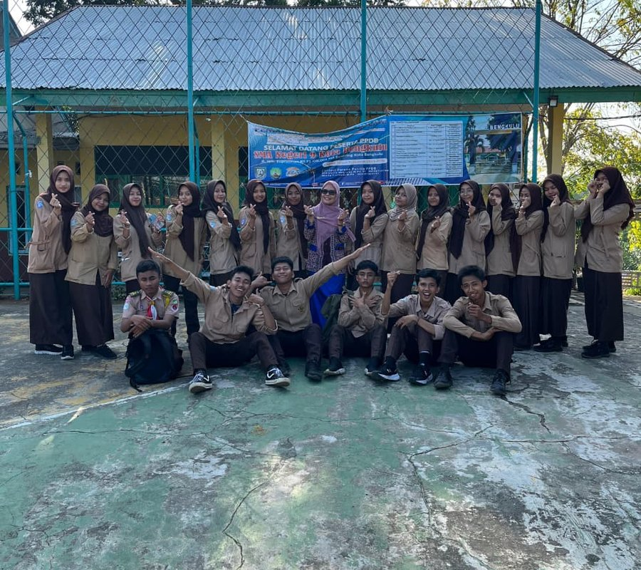
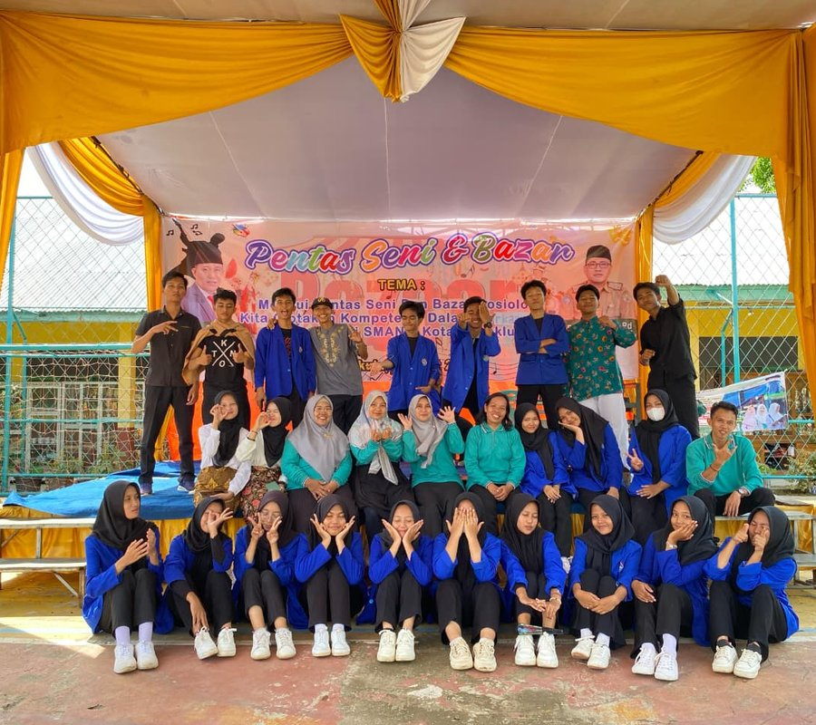
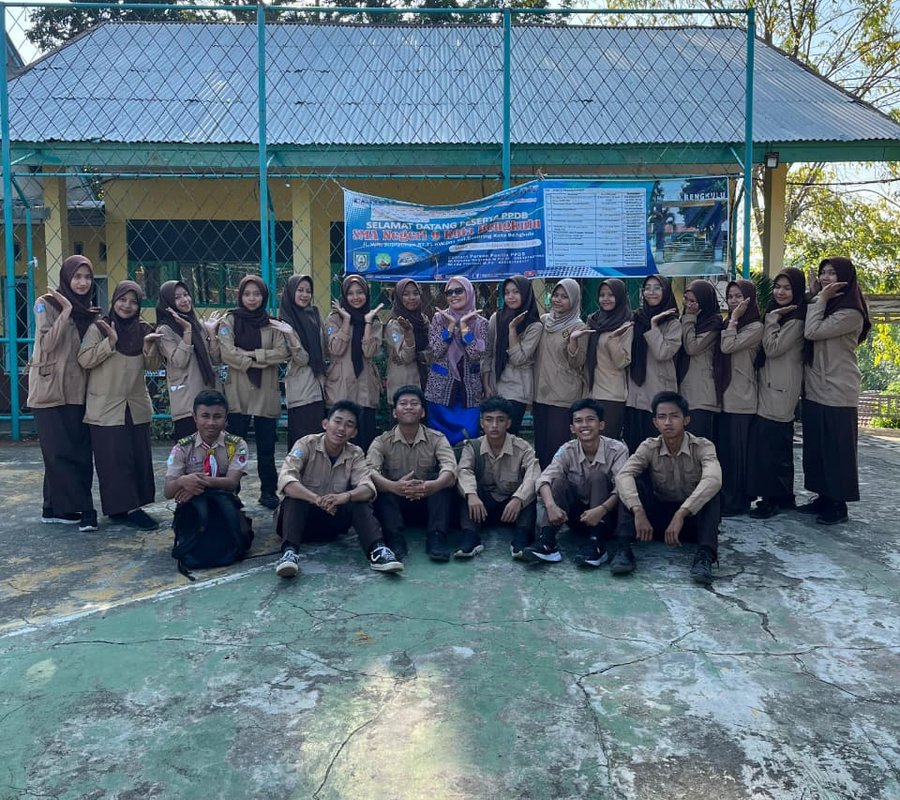
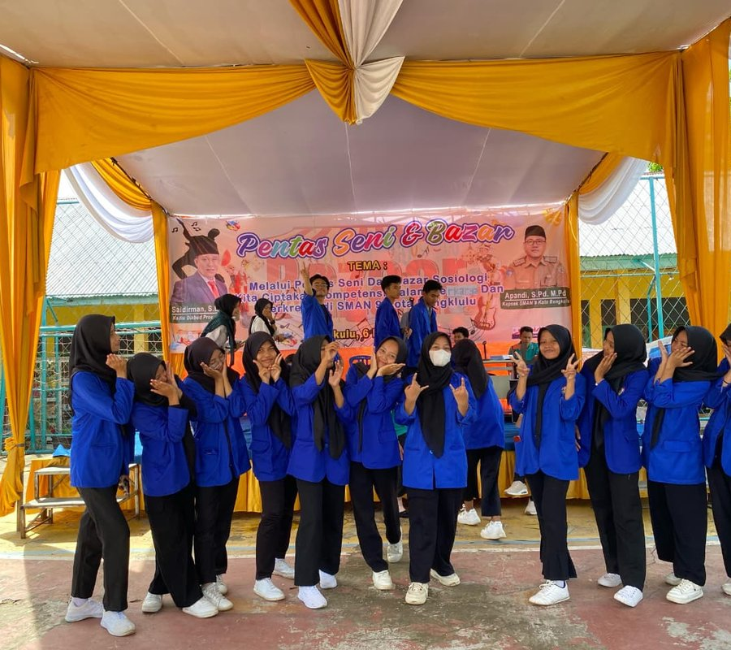
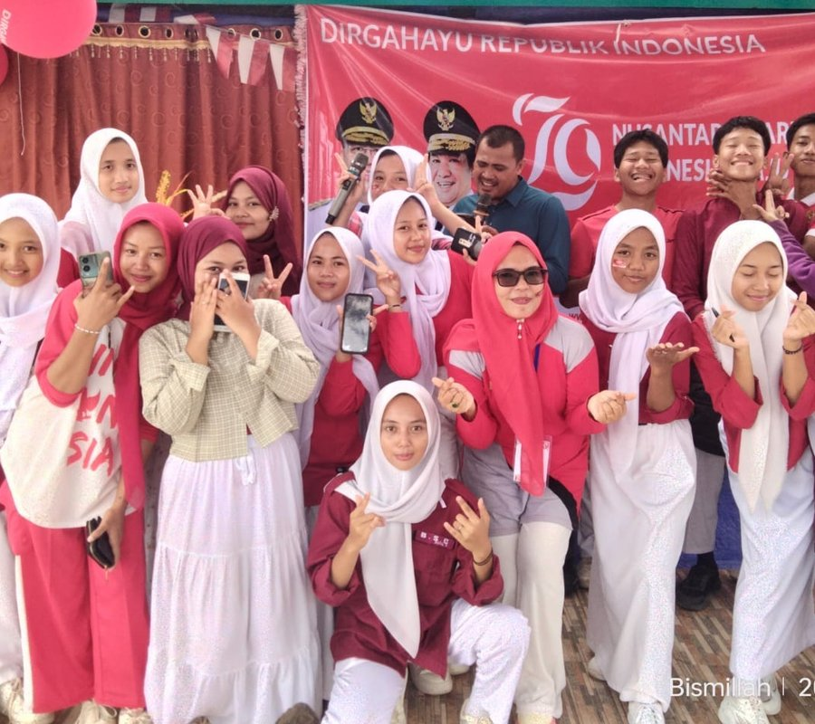
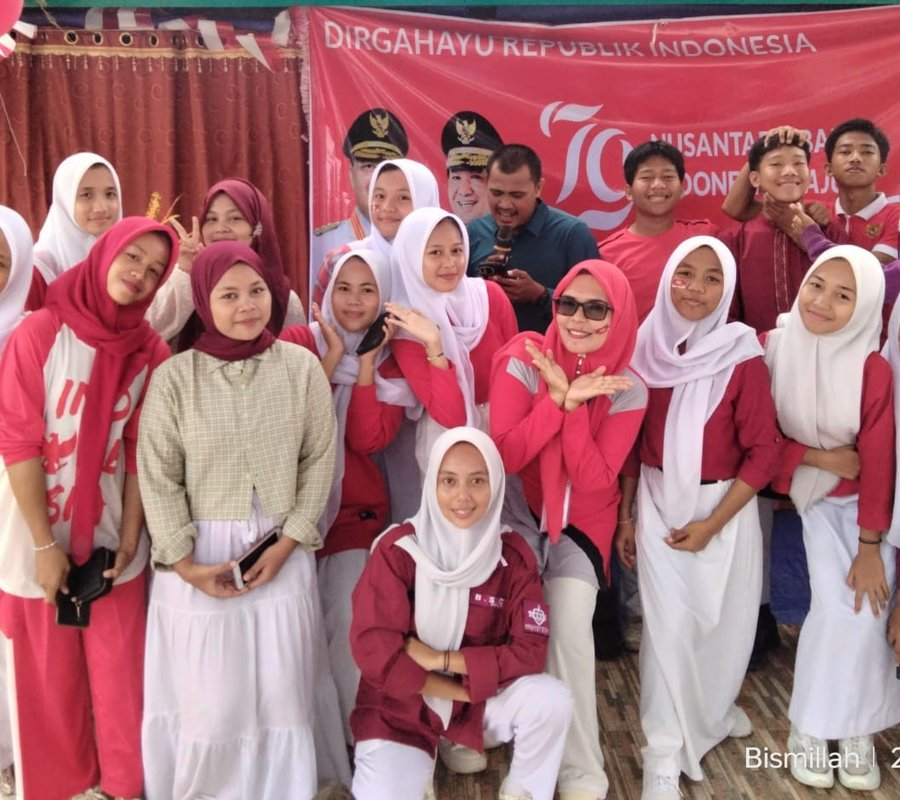

Hal yang sedang saya dalami.
Mempelajari dasar pemrograman web serta membuat dan menyusun website sederhana dengan HTML dan CSS.
Tertarik pada teknologi informasi dan memperdalam pengetahuan melalui studi Sistem Informasi.
Antusias pada dunia digital dan terus mengembangkan keterampilan untuk berkarya di bidang teknologi.
Kemampuan teknis dan non-teknis yang saya miliki.
Perjalanan pendidikan saya.
Menempuh pendidikan S1 Program Studi Sistem Informasi di Universitas Muhammadiyah Bengkulu. Saat ini mengembangkan pengetahuan dan keterampilan dasar dalam pemrograman web (HTML dan CSS).
Menempuh pendidikan menengah atas pada Jurusan IPA di SMA Negeri 9 Kota Bengkulu. Selama masa sekolah aktif berorganisasi di OSIS pada Bidang Bela Negara dan terlibat dalam berbagai kegiatan sekolah.
OSIS SMA Negeri 9 Kota Bengkulu.
SMA Negeri 9 Kota Bengkulu. Berpartisipasi dalam kegiatan dan program organisasi di lingkungan sekolah, serta mengikuti berbagai pertemuan dan sosialisasi yang diselenggarakan sekolah dengan melibatkan anggota OSIS.
Aktif terlibat dalam kepanitiaan kegiatan OSIS serta membantu pelaksanaan kegiatan sesuai tugas yang diberikan. Berkoordinasi dan bekerja sama dengan anggota lain dalam menjalankan kegiatan.
Mengembangkan kedisiplinan, rasa tanggung jawab, komunikasi, dan kemampuan bekerja dalam tim melalui pengalaman organisasi.
Dokumentasi kegiatan selama di SMA Negeri 9 Kota Bengkulu.





